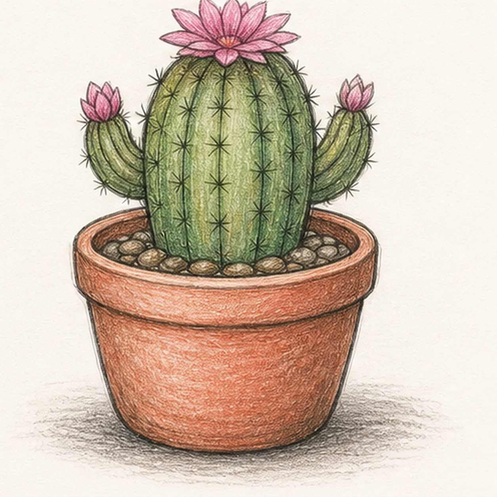
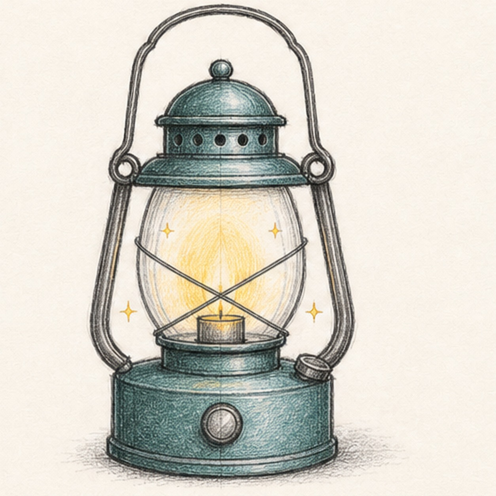
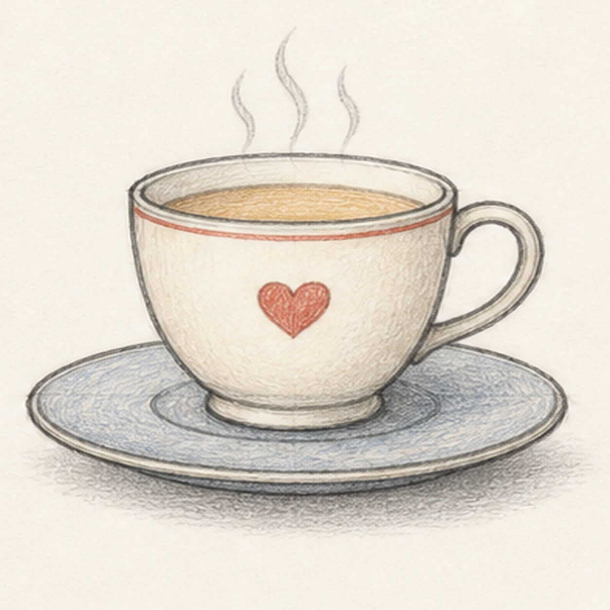

15 tutorials One new page every day
The sketch library
Missed a day? Start anywhere. Every lesson uses a short materials list, cumulative steps, and a finished drawing you can reasonably make in one sitting.
Choose a tutorialPick a page
Draw your way through the days
Newest first · 15 lessons

· 25 min · Easy-medium
How to draw a little tugboat
Open tutorial
· 25 min · Easy-medium
How to draw a garden watering can
Open tutorial· 25 min · Easy-medium
How to draw a paint palette and brush
Open tutorial· 25 min · Easy-medium
How to draw a stack of pancakes
Open tutorial
· 25 min · Easy-medium
How to draw a birdhouse on a post
Open tutorial
· 30 min · Easy-medium
How to draw a potted cactus with flowers
Open tutorial
· 30 min · Easy-medium
How to draw a camping lantern
Open tutorial· 25 min · Easy-medium
How to draw a patchwork kite in the wind
Open tutorial
· 25 min · Easy
How to draw a cozy teacup
Open tutorial
· 25 min · Easy-medium
How to draw a garden snail on a leaf
Open tutorial
· 25 min · Easy
How to draw a curious fox
Open tutorial
· 20 min · Easy
How to draw a sleepy cat
Open tutorial
· 15 min · Easy
How to draw a sprouting seed
Open tutorial
· 25 min · Medium
How to draw a cozy mushroom
Open tutorial
· 25 min · Easy-medium